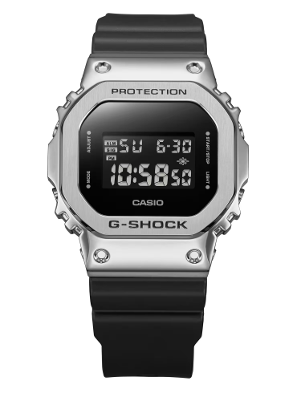
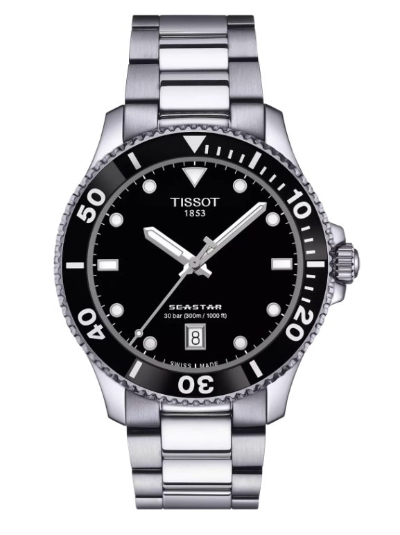
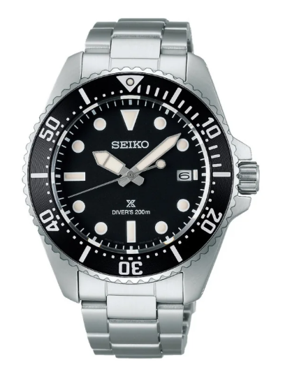
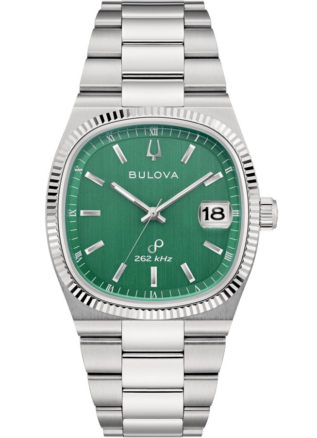
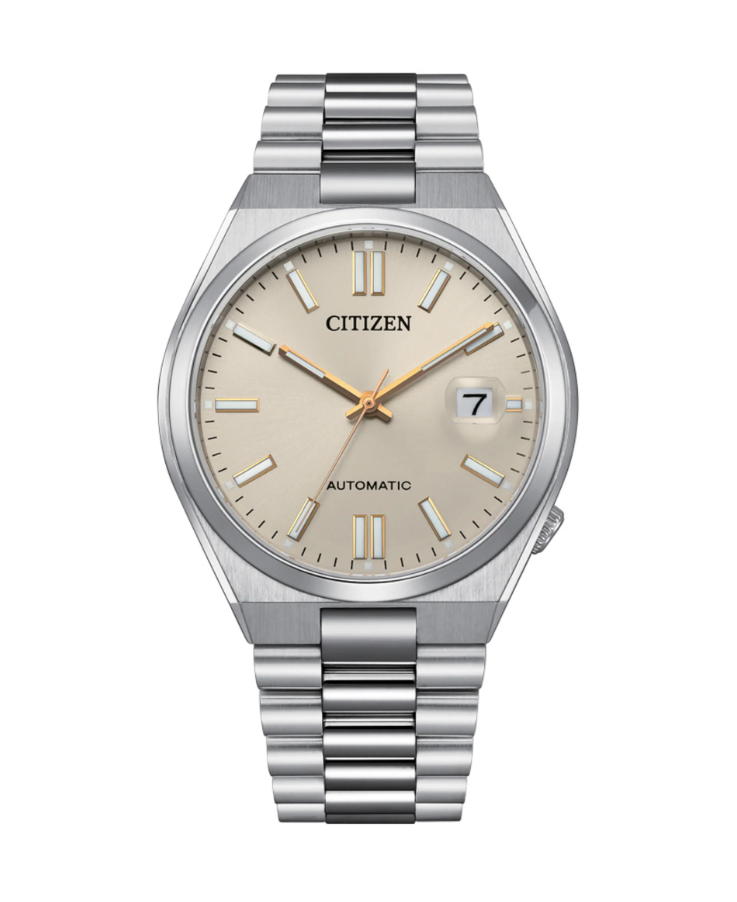
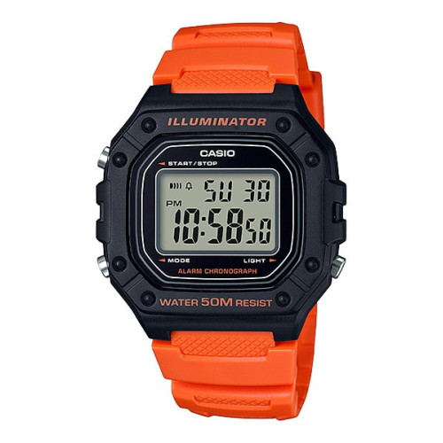

Watches
0
Casio G-Shock
- Referencia: GM-5600U-1
- Caja: Acero inoxidable
- Movimiento: Cuarzo
- WR: 200m
- Diámetro: 43.2mm
- Cristal: Mineral

Tissot Seastar 1000
- Referencia: T120.410.11.051.00
- Caja: Acero inoxidable 316L
- Movimiento: Cuarzo
- WR: 300m
- Diámetro: 40mm
- Cristal: Zafiro

Seiko Prospex Divers Scuba
- Referencia: SBDJ063
- Caja: Acero inoxidable
- Movimiento: Cuarzo solar
- WR: 200m
- Diámetro: 41mm
- Cristal: Zafiro

Bulova Precisionist SUPER SEVILLE
- Referencia: 96B439
- Caja: Acero inoxidable 316L
- Movimiento: Precisionist 262kHz
- WR: 30m
- Diámetro: 37.5mm
- Cristal: Zafiro

Citizen Tsuyosa
- Referencia: NJ0151-88W
- Caja: Acero
- Movimiento: Automático
- WR: 50m
- Diámetro: 40mm
- Cristal: Zafiro

Casio Illuminator
- Referencia: W-218H-4B2VEF
- Caja: Resina
- Movimiento: Cuarzo digital
- WR: 50m
- Diámetro: 43.2mm
- Cristal: Acrílico